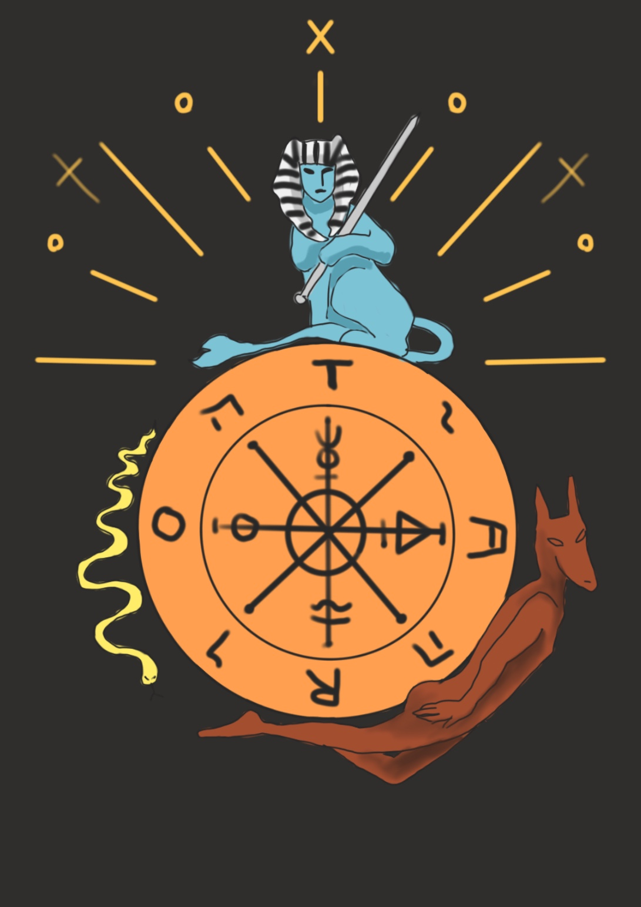

The wheel of fortune
내면의 깊고 신비로운 법칙, 무의식의 심연, 패턴을 뒤집는 갑작스러운 변화, 필연적인 계획, 운명에 순응함
우리는 그 신비로운 법칙을 볼 수도 알 수도 없지만, 그것은 이제까지의 삶의 패턴을 뒤집는 운명의 변화이다.
바퀴 위에 있는 네 명의 인간들은 운명의 상이한 체험들을 상징한다.
그때 우리는 바퀴 이면의 근원을 보지 못하고 그 변화에 대처하는 데만 온통 신경을 쓰게 된다.
꼭대기에 있는 사람은 수레바퀴의 회전을 통해 갑작스런 성공을 거둔다. 반면 바퀴 밑에 있는 사람은 파산했다.
우측에 있는 사람은 위로 기어오르고 있다. 다른 사람들에게 성공과 파산을 가져다준 똑같은 힘의 도움을 받으면서, 한편 왼쪽에 있는 사람은 자신의 뜻과는 반대로 하강하기 시작하고 있다.
그러나 이 카드는 사실상 행운, 변화, 우연 등에 대한 것이 아니다.
우리는 오직 외적인 결과들을 통해서만 그들을 인식할 수 있다. 우리는 그것을 운명이라고 느낀다.
그러나 그것은 어떤 외부적인 힘이 아닌 영혼의 심연에서 나온다.
바퀴의 이미지는 심원하다. 바퀴 움직임은 우리가 마주치는 인생의 파노라마와 닮았다
러나 중심축은 언제나 부동이며 불면의 에센스, 원천으로 남아 있다.
이 축은 감추어진 ‘자기(self)’와 유사하다. 그는 다양한 사건, 환경, 길, 사람들을 선택한다